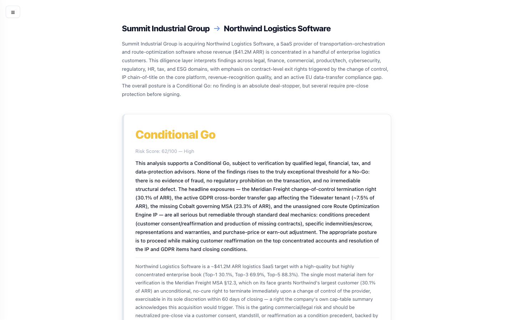
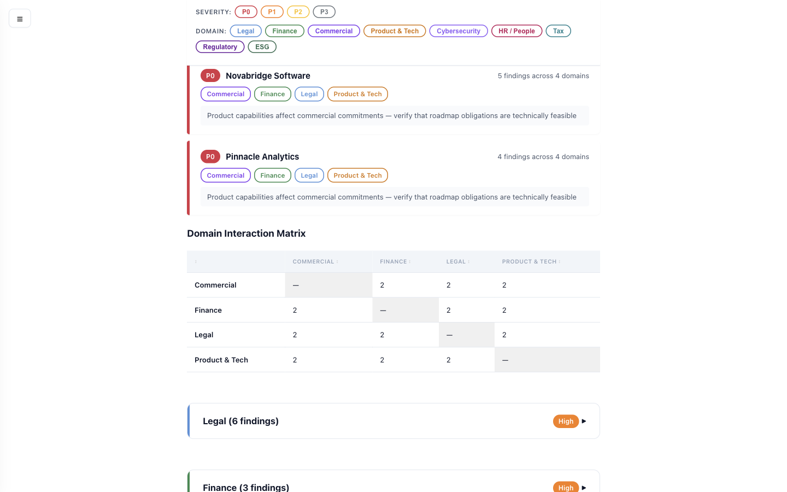

Nine specialist domains read every contract in parallel, cross-reference their findings, and trace every conclusion to an exact page, clause, and quote — producing the cross-domain picture that normally takes weeks to assemble from siloed advisor reports.
If you remember three things from this conversation:
Legal, Finance, Commercial, Tech all flag the same counterparty separately. This automatically links a change-of-control clause (Legal) to the revenue concentrated under it (Finance) to the key-person who owns it (HR) — one compound risk, not four disconnected memos.
No "the AI thinks." Each finding carries the source file, page, section, and a verbatim quote — verified against the actual document. Unverifiable claims are auto-downgraded. It's built to survive an IC and a regulator, not to impress a demo.
First-read across hundreds of contracts in hours instead of weeks; standardized across every deal you screen. Your counsel and bankers still sign the conclusions — they just start from a cross-referenced map instead of a blank page.
One run produces an interactive HTML report (Go/No-Go verdict → action items → domain detail → full evidence), a 14-sheet Excel workbook for downstream modeling, and per-finding JSON with citations. Open it offline in a browser. Filter to "P0 only" and share the URL with the deal team.
As a corp-dev lead, I'd spend weeks assembling the cross-domain picture from siloed advisor reports. Legal, financial, and commercial teams all flagged the same target independently — with nobody connecting the dots.
A termination clause in one contract and a revenue-concentration risk in the same counterparty would sit in two separate workstreams — if they were flagged at all.
The analysis wasn't the hard part. The integration was. Nine workstreams, hundreds of documents, no shared index, no cross-reference, and a clock that keeps compressing. That's a systems problem — and systems problems have engineering answers.
This isn't a prototype. It's an open-source package (pip install dd-agents), 60k+ lines, 4,000+ tests, strict-typed, Apache-2.0 — running on real deal data rooms.
86% of M&A organizations have integrated GenAI into deal workflows (Deloitte 2025). Roughly half of practitioners now use AI in DD specifically (Bain). ~$4.9T in 2025 deal activity, AI cited as rationale in a third of the 100 largest deals (PwC).
Existing tools are single-domain and legal-centric (Luminance, Kira/Litera, Harvey), single-function (VDRs, CLM), or a build-it-yourself GenAI framework. None do multi-domain forensic DD with adversarial cross-validation across all nine workstreams. That gap is what this fills.
Every document is read by all nine in parallel. Each carries deep, deal-aware domain logic (e.g. Legal disaggregates change-of-control into five distinct subtypes). Enable/disable any of them per deal in config.
Change-of-control (5 subtypes), anti-assignment, termination rights, IP ownership & freedom-to-operate, indemnities, liability caps, governance graph
Revenue cross-referencing (flags >5% ARR mismatch), revenue decomposition, unit economics (CAC/LTV/NRR/GRR), pricing compliance, insurance program
Renewals, churn, SLA & service-credit exposure, customer concentration (>30% flag), MFN clauses, supply-chain & operational capacity
DPA analysis, SOC 2 / ISO 27001, technical SLAs, integration & migration complexity, data portability, technical debt, vendor lock-in
Breach history, identity & access, encryption, incident response (MTTD/MTTR), vuln management, third-party risk, cyber insurance
Comp & benefits liabilities, key-talent retention, CoC acceleration / golden parachutes, labor & union exposure, succession, classification
Income tax, transfer pricing, NOLs & §382, sales/use nexus, international & deal-structure tax, provisions, controversy
License transferability, antitrust (HSR/EU, HHI), data-privacy regulation, AML/sanctions, government contracts, sector rules
Environmental contamination, permits, climate/carbon (Scope 1/2/3), hazardous materials, ESG governance & disclosure (CSRD/TCFD)
External specialists plug in via a Python entry-point — no core changes. Three built-in extensions already exist: Insurance→Finance, Operations→Commercial, IP-Deep→Legal.
A small in-house team running many deals a year. Different targets, different data rooms — but the same nine workstreams every time. That's the exact profile where a standardized, repeatable DD engine compounds in value.
| Deal shape | Where the risk concentrates |
|---|---|
| AI / IP-heavy target | Model IP & data rights, open-source exposure, DPAs, cross-border tax |
| Public-company carve-out | SEC-grade scrutiny, regulatory clearance (CFIUS/HSR), ARR quality |
| VC-backed SaaS | Customer concentration, churn, retention, revenue quality |
| Regulated fintech / health | Financial-crime / AML / sector compliance, license transferability |
| Platform / bolt-on | Commercial commitments, contract assignment, integration |
Each row is a different data-room shape — but the same nine domains, run the same disciplined way.
Your repeating DD workstreams are this tool's nine agents.

Self-contained & offline. One HTML file, zero network calls, XSS-safe. Filter to "P0 only," and the URL itself encodes the filter — share it with the deal team.
A change-of-control clause is a Legal finding. The $2.4M ARR concentrated under that customer is a Finance finding. The key account-owner with no successor is an HR finding. Three teams, three memos, three workstreams.
This system recognizes they're the same compound risk on the same counterparty — and escalates it accordingly.

38 deterministic steps, 5 blocking quality gates. This control inversion is the whole ballgame — and the reason it's reliable enough for deal work.
The orchestrator can't skip a step, miscount, or proceed past a failed gate, because it isn't an LLM — it's code. Agents are invoked at specific steps; their output is validated by Python before the pipeline advances. Resume from any checkpoint after a failure.
An earlier version let the LLM run the whole pipeline from a prose spec. On a real ~200-counterparty deal, we did a retrospective on the failures.
The LLM that's told to follow the rules is also the entity that decides whether to follow them. Markdown emphasis — "MUST", "BLOCKING", "CRITICAL" — has zero enforcement power.
Invert control. Python enforces flow. Hooks enforce output format. Validation gates are if/else in code. Coverage is verified by counting files on disk. Numbers are re-derived from source. The LLM does analysis; it never decides whether quality passed.
This is the difference between an impressive demo and a system a deal team can put its name on.
When an agent says "termination right in Section 12.3," the system independently confirms that quote actually exists. This is what separates analysis from hallucination.
The single biggest unlock: giving the model an explicit way to say NOT_FOUND and write a gap. Without that escape valve, models fabricate rather than admit ignorance. With it, hallucination drops sharply.
After the first pass, symbolic rules — no LLM, fully auditable — fire when one domain's finding has implications in another. Each fired rule spawns a focused second-pass analysis, scoped to only the cited contracts, with full provenance.
| If this domain finds… | …ask this domain to | |
|---|---|---|
| Finance: revenue recognition issue | Legal | verify contract enforceability — ASC 606 rights, delivery criteria, clawbacks |
| Legal: change-of-control risk | Finance | quantify revenue at risk if CoC terminates; acceleration; ARR/TCV impact |
| Legal: termination-for-convenience | Finance | calculate at-risk remaining contract value & committed vs uncommitted revenue |
| Legal: IP ownership dispute | Product/Tech | assess which systems depend on the disputed IP; migration cost |
| Product/Tech: cross-border data flow | Legal | verify DPA compliance — SCCs/adequacy, GDPR Art. 28, breach notice |
| Commercial: SLA / service-credit risk | Finance | quantify max annual service-credit liability & recurring-revenue impact |
| Finance: pricing anomaly | Commercial | validate vs rate cards, volume commitments, renewal & competitive benchmarks |
LLMs are for judgment; code is for control. The rules are pattern-matched on finding category + severity + keywords — deterministic, logged, budget-bounded (≈$5/deal cap on second-pass work). You can audit exactly why every cross-domain check fired.
"IBM", "International Business Machines", and subsidiary "Red Hat" — same entity in your analysis? If the system can't resolve that, consolidation breaks.
Counter-intuitive guard: names ≤5 chars never fuzzy-match — otherwise "Inc." matches everything. Every match is logged for audit.
A data room has v1, v2_draft, v2_signed, MSA_final, MSA_executed. And an MSA governs every Order Form beneath it — until an Order Form says "notwithstanding…" and the child overrides the parent.
CoC-impact query across 200 contracts resolves in ~50ms. The graph decides how clauses interact; the LLM only reads what each one says.
A raw AI flags every change-of-control clause as critical. But the deal structure decides what's actually material — and that context flows through the whole pipeline.
Final severity is decided once, by code, not scattered across the pipeline: the agent's call → deterministic recalibration of known false positives (termination-for-convenience capped at P2; competitor-only CoC → P3) → your own per-deal overrides. Every finding carries its severity_source and the full chain, so an IC or auditor sees exactly why each clause landed where it did. A safety bound means a user override can never silently bury a genuine deal-breaker.
The twist seasoned people catch: some contracts treat ownership change as a "deemed assignment," so anti-assignment can trigger even in a stock deal. That's why CoC is disaggregated into five subtypes — to catch exactly this.
Nine agents across hundreds of documents produce thousands of findings. Without classification, the real risks drown.
A separate agent spot-checks findings with accusatory framing — "this finding appears fabricated; prove it with a direct quote." (Polite "please double-check" prompts had near-zero effect; accusatory framing improved accuracy ~9% in the research.)
Know when to stop using LLMs. Validation, dedup, and audit were moved from an LLM to deterministic Python — quality went up, cost went to zero, and every failure now has a stack trace.
Five blocking gates halt the pipeline on failure — they don't just log a warning nobody reads. If it can't meet the bar, it stops and tells you why.
Halts if document text extraction systemically fails.
Every counterparty must be analyzed by every agent. Auto-respawn for gaps.
6 layers: source traceability, re-derivation, cross-source & cross-format consistency.
18 structural checks — manifests, citations, domain coverage, report sheets.
Excel must match the numerical manifest cell-for-cell before release.
Path-locked to the output dir. 50+ blocked shell patterns. Turn limits with hard kill. Agents have tools, not shell freedom.
Plus 31 Definition-of-Done checks at the end and atomic, read-only handling of your data room — the tool never modifies your files, sends nothing home, and writes only to a separate _dd/ directory.
An M&A lead can adapt the nine specialists to a deal or a house style by editing markdown — not Python. Drop a file per agent, or inherit a deal-type profile.
Bundled deal-type profiles (saas, regulated-fintech, …) compose with one merge rule. A non-removable safety floor — citation mandate, anti-fabrication, anti-tampering — is always appended last, so no customization can weaken the controls.
Run 1 finds the risk. Run 2 knows the context, catches what changed, and flags new contradictions.
The system develops institutional memory — like an analyst who remembers every deal they've ever worked on.
Across a deal pipeline this means: re-screening a target you looked at two years ago starts from what you already learned; recurring counterparties (shared customers, common vendors) carry forward; and post-close, the same engine re-runs to track whether flagged risks were remediated.
All 9 domains, cross-referenced, 5 gates, HTML + Excel + JSON. The deep run for an active target.
GREEN / YELLOW / RED across 8 deal-killer categories — litigation, IP gaps, undisclosed contracts, key-person, restatements, regulatory, customer concentration, debt covenants. A first read before you commit resources.
"Does this require consent on change of control? YES/NO/NOT_ADDRESSED." → Excel with answers, citations, verification scores. The prompts file is plain JSON any lawyer can write.
Multi-turn chat with memory over the findings; one-shot Q&A; track and compare risk across multiple deals; export PDF; data-room quality assessment before you even start.
Deployment: runs entirely on your machine or your cloud (Anthropic API or AWS Bedrock). Docker image, Homebrew, or pip. No telemetry, no phone-home — important for confidential deal data.
Per-agent and per-step cost tracking. Hard budget limits that halt the pipeline. Cross-domain second-pass work is capped (≈$5/deal default). You see the estimated cost before the run.
In a deal, pipeline cost shows up on someone's fee schedule. With intelligent cost management at every layer, the run cost stays manageable even for large data rooms.
The point isn't "cheaper than advisors." It's invaluable alongside them — additive to insight, not to the fee burden. A first-read that makes the expensive hours count.
Open-source, Apache-2.0 — no per-seat license, no SaaS subscription. The only marginal cost is the LLM tokens, on your own provider account.
A seasoned M&A person will ask this anyway — so here it is straight.
Legal, financial, and regulatory conclusions still belong to qualified professionals. The tool produces analysis they build on — IC memos, negotiation checklists, integration plans.
It analyzes what's in the data room. It doesn't do management interviews, site visits, customer calls, or live financial-audit work.
Extraction is the hard 80%. Truly unreadable scans degrade gracefully (it flags a gap rather than guessing), but quality depends on data-room quality.
Strongest on English contracts. 100+ language OCR is supported, but non-English legal nuance is less battle-tested.
File-based, no database. Excellent at typical deal scale; a mega-deal with tens of thousands of docs would want a different storage tier.
It's a CLI / open-source package. It assumes a technical operator to run it and a deal professional to interpret. That's also why it's adaptable to your playbook.
Run quick-scan on every target that reaches data-room stage. Standardize the first read so the team spends expensive hours only where red flags warrant it — compounding across the hundreds of targets a corp-dev team screens each year.
Encode your severity rules, deal-type logic, and focus areas once as reusable dd-config/ markdown profiles — then every deal is diligenced the same way, with the buyer-thesis "Acquirer Intelligence" agent mapping findings to your integration priorities.
Every finding carries its source quote, severity chain, and a config/prompt-version fingerprint. The report shows the exact analyst configuration it ran under — so an IC or regulator can trace any conclusion end-to-end.
Compare risk profiles across targets you're weighing; carry institutional memory between runs; re-run post-close to track whether flagged risks were remediated.
Self-hosted, runs on the Anthropic API or AWS Bedrock, no telemetry. Confidential deal data never leaves your environment — a hard requirement you can't get from most SaaS DD tools.
It's open source for a reason. The most useful directions come from people who run more deals than I do — which domains matter most, what the IC wants to see first. That feedback shapes where this goes next.
74% → 95% accuracy came from extraction, chunking, citation verification, deterministic gates, and cross-domain synthesis — not from a bigger model. That discipline is what makes this usable for real M&A.
Interactive sample report — no install:
zoharbabin.github.io/
due-diligence-agents/sample-report/
pip install dd-agents
Apache-2.0 · 4,000+ tests · open source
A working session on a real (or synthetic) data room — a live run, end-to-end.
These patterns aren't M&A-specific — they apply to any system doing cross-document analysis at scale: contract review, compliance, research synthesis, knowledge management.